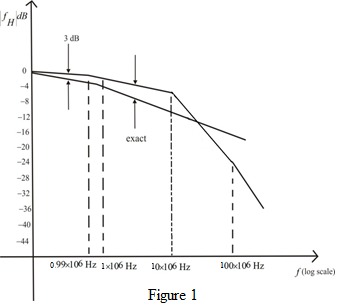

The factor  expresses the poles and zeros is as shown below:
expresses the poles and zeros is as shown below:
The initial DC gain of amplifier is 40 dB, poles at, zeros at 100 MHz and  .
.
Therefore,
Substitute
The factor expresses the poles and zeros is as shown below:
The initial DC gain of amplifier is 40 dB, poles at, zeros at 100 MHz and .
Therefore,
Substitute
The amplifier gain taking into account the internal transistor capacitances can be expressed as a function of the complex frequency variable “s” is shown below:

is the mid band gain
low frequency gain is 40 dB
The 3 dB frequency  can be calculated as shown below:
can be calculated as shown below:
Draw the Bode plot as shown in Figure 1.

Hence, the 3 dB frequency value is